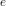
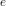
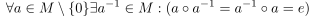
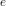

Existenz eines Inversen Elements
1. Axiom
Sei  eine Menge und
eine Menge und  eine Verknüpfung mit dem Neutralen Element 
Das Axiom ist erfüllt, wenn gilt:
eine Verknüpfung mit dem Neutralen Element 
Das Axiom ist erfüllt, wenn gilt:

1
Insbesondere hat das Neutrales Element der Addition kein Inverses Element
Sei eine Menge und eine Verknüpfung mit dem Neutralen Element 
Das Axiom ist erfüllt, wenn gilt:
Insbesondere hat das Neutrales Element der Addition kein Inverses Element